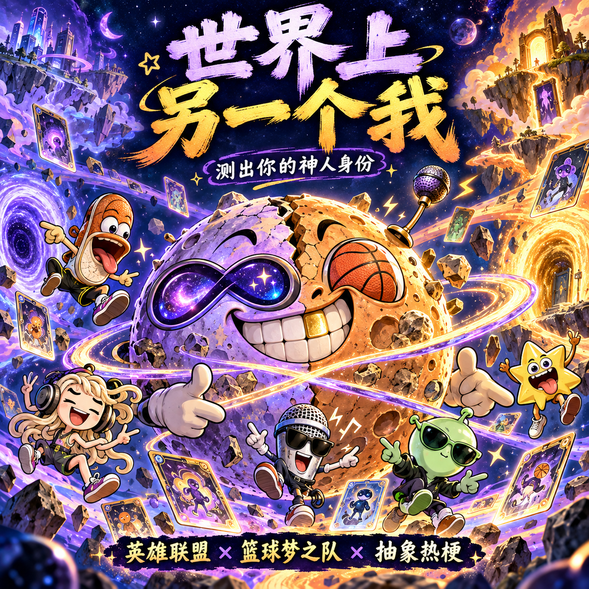

三幕漫画开场 → 选择穿越隧道 → 随机答题 → 身份揭晓 → 背景故事与五人战队。
手机直接打开网页版 ↗英雄联盟（综合）、篮球梦之队、抽象热梗。95 位角色、348 道题、125 张恶搞海克斯，支持自选五人队。
HTML 需交给支持网页脚本的浏览器打开，手机即时体验请用上面的网页版。
静态审计无错误，低于 10 MiB 上限。此 ZIP 用于小红书创服平台上传；平台模拟器、Android 和 iOS 真机扫码待验证，兼容性尚未实测。

① 下载方形封面 PNG ↓② 下载透明底 Logo PNG ↓③ 下载平行 S8 剧情图 ↓84 位真人头像已核对重绘，1 位原创人物。带篮子、杨毅等 10 位头像暂用明确标注的文字占位，避免错脸。人物卡、题目和海克斯已加入。